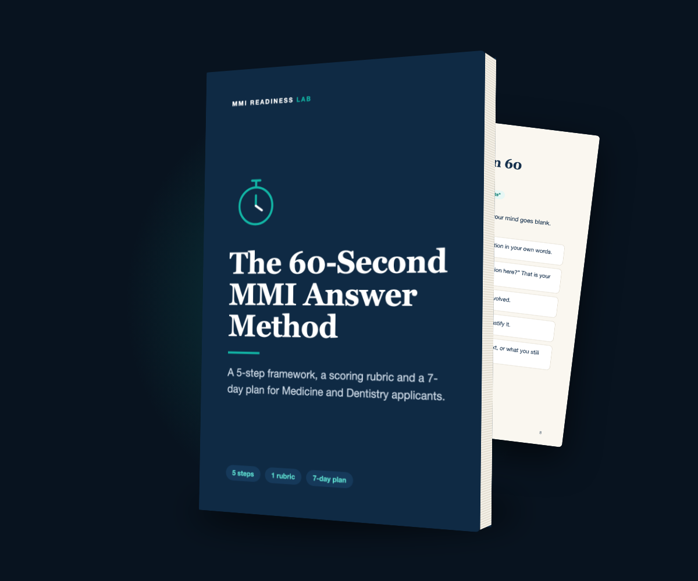
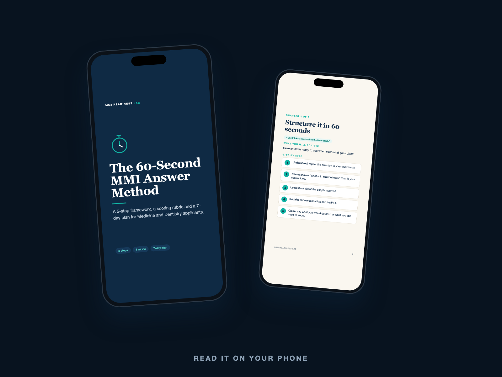
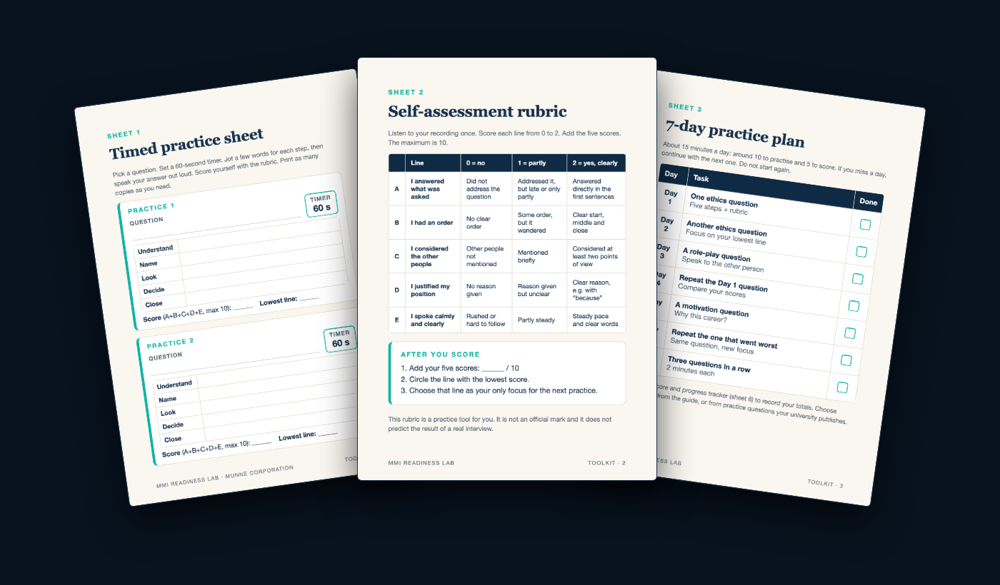

For Medicine and Dentistry applicants preparing for MMIs
Turn MMI nerves into a clear, confident interview performance.
Know exactly how to structure your MMI answers in 60 seconds, and practise with a clear plan before interview day.

Get the PDF for £24.99Instant digital download. 22-page PDF + printable toolkit + 3 bonus guided audios. Secure checkout on Hotmart. 7-day refund policy.
You know what you want to say. Then the timer starts.
You have the motivation. You have read about ethics. You have practised in your head. Then the station begins and:
your mind goes blank,
you start talking and cannot find the end,
or you reach your best point just as time runs out.
It does not mean you are not suited to Medicine or Dentistry. It often means you do not yet have an order to follow when you are under pressure.
What applicants say goes wrong
Common worries, paraphrased from public applicant forums and interview-prep guides. These are not testimonials for this product.
"My mind went blank halfway through the answer."
"I kept talking until the timer cut me off, instead of finishing."
"I either ran over the time or stopped far too early."
"I have read about frameworks, but I do not know which one to use in the moment."
"I was told not to memorise answers, but I do not know what to practise instead."
"One bad station and I carried the panic into the next one."
If any of these sound familiar, this method was written for exactly that gap: a clear order to follow, a way to score yourself, and a routine.
Why "just practise more" is not enough
Practising without a method can repeat the same habits. You may rehearse long answers that wander, or keep opening with "that is a difficult question" and lose your first ten seconds.
Free guides give you questions and example answers. That helps, but it does not always show you how to build an answer yourself, or how to tell whether it improved.
A simple structure you can use in every station
The 60-Second MMI Answer Method gives you three things:
1A 5-step framework
2A self-scoring rubric
3A 7-day practice plan
The framework: Understand, Name, Look, Decide, Close. The rubric lets you score your own answers, so you can see what to fix. The plan gives you a routine instead of random practice.
It is a practice tool. It does not replace feedback from a person, and it does not predict your result.

What is inside the PDF
22 pages, large text, made for your phone.
A practice question list: 10 example questions across ethics, role-play, motivation and teamwork.
A first exercise: answer one question out loud and find your starting point today.
Chapter 1: understand what they really assess.
Chapter 2: structure it in 60 seconds, with the 5-step framework and a worked example.
Chapter 3: answer the question and stop going round in circles.
Chapter 4: score your own answer with a simple rubric.
Chapter 5: repeat with feedback through a 7-day practice plan.
Every chapter ends with a short task and space to write your answers.
Also included: a printable toolkit of 6 A4 sheets

Timed practice sheet, self-assessment rubric and 7-day practice plan: the core tools, ready to print or fill in on a tablet.
Know Your MMI checklist: a short list to find what your university publishes about its interview.
60-second structure card: print it, cut it out and keep it next to you while you practise.
Score and progress tracker: score each practice over 7 days and see what changes.
Bonus included
3 guided practice audios
Practise out loud with a timer, with someone guiding each step. Listen on your phone, in the car or on a walk.
Your first practice answer: answer one question with the 5 steps, score yourself and choose one thing to fix.
The 60-Second Answer Structure: learn the five steps before you practise, with short pauses to try each one.
The 7-Day Practice Plan: start your week without feeling overwhelmed.
The audios are delivered through a link inside your PDF.
£24.99
Get the PDF for £24.99One payment. PDF + toolkit + 3 audios. Instant access after checkout.
Who this is for
Applicants to Medicine or Dentistry who will face MMI-style stations.
People who freeze, ramble or run out of time.
Applicants who want a clear structure and a simple plan, without paying for a full course.
Anyone who wants to practise alone, at their own pace.
Who this is not for
Anyone looking for a promise of admission. No guide can give one.
Anyone who needs personalised feedback or live coaching. This PDF does not include them.
Anyone who wants a large bank of hundreds of questions with model answers. This is a method, not a question bank.
Anyone who needs medical, legal or university-specific advice.
Why you can trust this, and what you can check yourself
MMI Readiness Lab is new, so there are no reviews yet. That is the honest position. What you can check:
You can read exactly what is inside on this page.
The method is simple and every step can be tested from your first session.
The PDF does not promise results, and says so plainly.
Payment and delivery run through Hotmart, with a 7-day refund policy set in the offer.